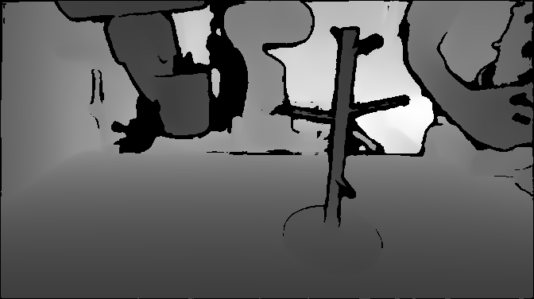
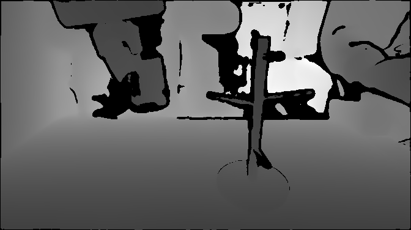

Regular Cup Hang
External-View Stereo RGB Reference

Depth misses the cup handle and thin rack geometry.

PCD deforms the cup and rack structure.

Depth misses the cup handle and thin rack geometry.
PCD deforms the cup and rack structure.

Depth misses the transparent cup surface.

PCD loses most of the glass cup geometry.

StereoPolicy directly turns synchronized stereo images into geometry-aware policy features, bridging pretrained 2D visual representations with implicit 3D spatial reasoning.
Pipeline of StereoPolicy. A stereo perception module to extract geometry-aware features for robot policies. The resulting representations can be seamlessly integrated into both diffusion policies and VLA models without modifying their backbone architectures.
StereoPolicy-VLA (Pi0.5) performance on bimanual mobile manipulation tasks in both real-world and simulation settings (success rate over 20 trials).
Select a tabletop task to inspect its synchronized third-person and wrist stereo views.
Videos are shown from the original 3x recordings.| Method | Banana PnP |
Toast Insert |
Plastic Cup Hang |
Steel Cup Hang |
Glass Cup Hang |
AVG SR (%) |
|---|---|---|---|---|---|---|
| RGB | 12/20 | 7/20 | 12/20 | 10/20 | 1/20 | 42.0% |
| RGBD | 14/20 | 8/20 | 11/20 | 8/20 | 0/20 | 41.0% |
| RGBD-3DDA | 13/20 | 9/20 | 13/20 | 10/20 | 0/20 | 45.0% |
| PCD-PointNet | 7/20 | 0/20 | 5/20 | 2/20 | 0/20 | 14.0% |
| PCD-DP3 | 11/20 | 3/20 | 8/20 | 5/20 | 0/20 | 27.0% |
| MultiView | 13/20 | 8/20 | 13/20 | 9/20 | 1/20 | 44.0% |
| StereoPolicy-DP | 16/20 | 12/20 | 15/20 | 13/20 | 3/20 | 59.0% |
Real-World Tabletop Task Performance. StereoPolicy-DP consistently outperforms other visual modalities. PCD performs worst in all real tasks; both RGBD and PCD fail on glass cup hang tasks.
Imprecise radio-handle grasp.
Imprecise button press.
Imprecise toast grasp.
Tabletop failure videos are shown at 2x speed.
Toast misses slot.
Insertion misaligned.
Cup grasp misses.
Imprecise handle insertion.
Transparent cup missed.

| Method | OmniGibson | RoboMimic | ||||||||||||
|---|---|---|---|---|---|---|---|---|---|---|---|---|---|---|
| Strawberry | Pour Water | Open Door | Turn On Radio | Tool Hang | Square | Transport | ||||||||
| 100 | 200 | 100 | 200 | 200 | 300 | 200 | 300 | 100 | 200 | 100 | 200 | 100 | 200 | |
| RGB | 59.0% | 88.0% | 10.0% | 46.0% | 26.0% | 77.0% | 42.0% | 71.0% | 53.0% | 90.0% | 74.0% | 98.0% | 92.0% | 94.0% |
| RGB-D | 63.0% | 85.0% | 16.0% | 52.0% | 31.0% | 80.0% | 47.0% | 73.0% | 56.0% | 88.0% | 79.0% | 92.0% | 94.0% | 94.0% |
| RGBD-3DDA | 74.0% | 93.0% | 26.0% | 61.0% | 48.0% | 100.0% | 46.0% | 75.0% | 84.0% | 92.0% | 83.0% | 97.0% | 94.0% | 96.0% |
| PCD-DP3 | 45.0% | 63.0% | 3.0% | 31.0% | 30.0% | 69.0% | 35.0% | 64.0% | 40.0% | 76.0% | 69.0% | 88.0% | 63.0% | 72.0% |
| MultiView | 68.0% | 89.0% | 21.0% | 52.0% | 31.0% | 75.0% | 43.0% | 71.0% | 54.0% | 92.0% | 78.0% | 96.0% | 92.0% | 94.0% |
| StereoPolicy-DP | 82.0% | 100.0% | 34.0% | 70.0% | 57.0% | 100.0% | 55.0% | 82.0% | 94.0% | 96.0% | 88.0% | 100.0% | 94.0% | 96.0% |
Simulation Task Performance of Diffusion Policies over Different Visual Modalities. Stereo input consistently improves performance, especially under low-data regime.
Average StereoPolicy-VLA Performance on RoboCasa-Kitchen 24 Tasks.
@misc{han2026stereopolicyimprovingroboticmanipulation,
title={StereoPolicy: Improving Robotic Manipulation Policies via Stereo Perception},
author={Evans Han and Yunfan Jiang and Yingke Wang and Haoyue Xiao and Huang Huang and Jianwen Xie and Jiajun Wu and Li Fei-Fei and Ruohan Zhang},
year={2026},
eprint={2605.09989},
archivePrefix={arXiv},
primaryClass={cs.RO},
url={https://arxiv.org/abs/2605.09989},
}